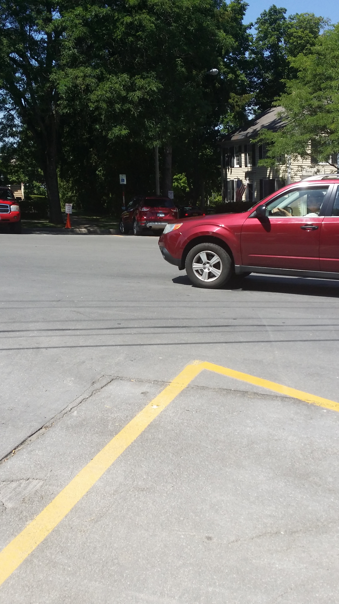

<h2>ProbeFileID: 3c3a485663bf37ed1e26678908be81fb, DonorFileID: 866d1f4f68e89f9c3060ba3c5eb329ee</h2><br/>DonorMaskFileName: reference/splice/mask/9c94365bb0ea95a787ff55a6906e5879.png<br/><table border='1'>    <tbody>        <tr>            <td>            2322x4128            </td>            <td>            2322x4128            </td>        </tr>        <tr>            <td>                        </td>            <td>                        </td>        </tr>    </tbody></table>